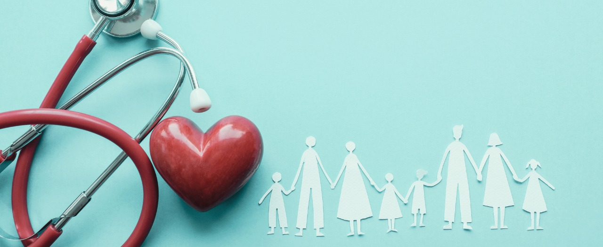

O que são as metas de Desenvolvimento Sustentável da ONU, e quais são elas?
A ONU e seus parceiros no Brasil estão trabalhando para atingir os Objetivos de Desenvolvimento Sustentável. São 17 objetivos ambiciosos e interconectados que abordam os principais desafios de desenvolvimento enfrentados por pessoas no Brasil e no mundo.
Os Objetivos de Desenvolvimento Sustentável são um apelo global à ação para acabar com a pobreza, proteger o meio ambiente e o clima e garantir que as pessoas, em todos os lugares, possam desfrutar de paz e de prosperidade. Estes são os objetivos para os quais as Nações Unidas estão contribuindo a fim de que possamos atingir a Agenda 2030 no Brasil.
Falaremos aqui sobre a meta de número 3: SAÚDE E BEM-ESTAR
caso queira saber mais sobre as metas da onuclique aqui
Porque ela é importante para nós?
A Meta 3 de Desenvolvimento Sustentável (ODS) da ONU, que se concentra em "Saúde e Bem-Estar", é essencial para o desenvolvimento sustentável da população brasileira por várias razões cruciais. Primeiramente, uma população saudável é um pilar fundamental para o crescimento econômico e social. A saúde é um recurso vital para o desenvolvimento humano, pois indivíduos saudáveis têm maior capacidade de aprender, trabalhar e contribuir para suas comunidades. No contexto brasileiro, investir em saúde significa não apenas garantir o bem-estar das pessoas, mas também promover um ambiente favorável para o desenvolvimento econômico e a redução das desigualdades. Além disso, a saúde está intimamente ligada à erradicação da pobreza. Muitas famílias brasileiras enfrentam o ciclo de pobreza devido a doenças crônicas, falta de acesso a serviços de saúde adequados e despesas médicas catastróficas. Portanto, melhorar a saúde da população brasileira não só reduzirá a incidência de doenças, mas também ajudará a quebrar o ciclo de pobreza, permitindo que as pessoas alcancem seu potencial máximo. Outro ponto importante é que a promoção da saúde contribui significativamente para a sustentabilidade ambiental. Muitos dos desafios de saúde enfrentados no Brasil, como doenças transmitidas pela água e pelo ar e problemas de saúde relacionados à poluição, estão diretamente ligados à degradação ambiental. Ao investir em saúde e bem-estar, o Brasil pode adotar práticas sustentáveis que protegem o meio ambiente, garantindo um futuro saudável para as gerações futuras. Além disso, a saúde é um direito humano fundamental. Todos os cidadãos brasileiros têm o direito de acesso a serviços de saúde de qualidade, independentemente de sua condição socioeconômica. Portanto, alcançar a Meta 3 dos ODS significa garantir que todos tenham acesso a cuidados de saúde adequados, promovendo a equidade e a justiça social em todo o país. Em resumo, a Meta 3 de Desenvolvimento Sustentável da ONU é crucial para o desenvolvimento sustentável da população brasileira porque promove o bem-estar humano, contribui para a erradicação da pobreza, protege o meio ambiente e promove a equidade e a justiça social. Investir na saúde e no bem-estar é investir no futuro do Brasil.
Objetivo do site
Esse site foi criado para ajudar a população Brasileira no combate à dois principais problemas que afligem a populaçáo.
Os problemas são duas doenças causadas por virus e que são consideradas infecções sexualmente transmissiveis: O Hiv e o Hpv
HIV
Tem curiosidade de saber mais sobre HIV Clique aqui
HPV
Tem curiosidade de saber mais sobre HPV Clique aqui
quer sugerir uma outra doença? clique aqui
